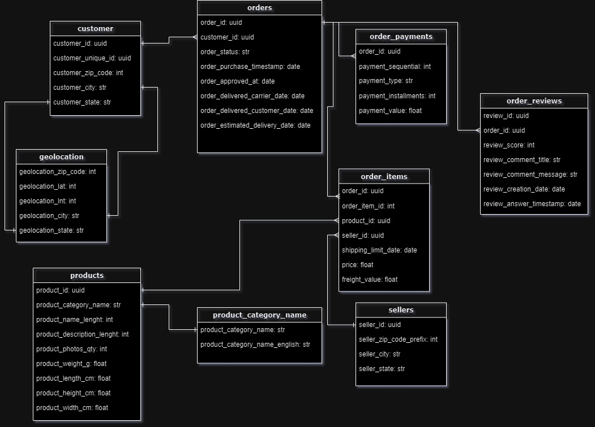

Sobre o Projeto de Pipeline
Construção do Projeto
1. Coleta de Dados
- Como mencionado na pagina Home utilizamos o seguinte Dataset para manipulação de dados, segue o diagrama relacional:

- Utilizamos o airflow para iniciar a coleta dos dados de um banco relacional, com objetivo de popular a camada de Landing.
Codigo aqui
2. Processamento de Dados
- O processamento segue o seguinte fluxo:

- Começando pela camada Landing:
Camada Landing
Com o código abaixo iniciamos uma sessão Spark utilizando Delta Lake.
# Iniciando uma SparkSession com Delta Lake
spark = SparkSession.builder \
.appName("DeltaLakeSparkS3") \
.config("spark.sql.extensions", "io.delta.sql.DeltaSparkSessionExtension") \
.config("spark.sql.catalog.spark_catalog", "org.apache.spark.sql.delta.catalog.DeltaCatalog") \
.getOrCreate()
- Como comentado na Home estamos utilizando Amazon S3.
# Função para ler dados do S3
def read_from_s3(bucket, path):
try:
df = spark.read.format("csv").option("header", "true").load(f"s3a://{bucket}/{path}")
return df
except Exception as e:
print(f"Erro ao ler dados do S3: {e}")
- Depois de realizado a leitura, salvamos os dados em formato PARQUET e direcionamos os dados para a camada Bronze.
# Função principal
def main():
try:
# Definindo os caminhos dos arquivos CSV na landing
paths = ['geo.csv', 'dadosprodutos.csv', 'pedidos.csv', 'clientes.csv', 'vendedores.csv', 'pagamentos.csv', 'dadospedidos.csv']
dfs = {}
for path in paths:
df_name = path.split('.')[0]
dfs[df_name] = read_from_s3(landing_bucket, f"/{path}")
# Salvando os DataFrames no formato Parquet usando Delta Lake no bucket da camada bronze
for df_name, df in dfs.items():
df.write.format("delta").mode('overwrite').save(f"s3a://{bronze_bucket}/{df_name}")
print("Dados salvos na camada bronze com sucesso.")
except Exception as e:
print(f"Erro no processo principal: {e}")
if __name__ == "__main__":
main()
Camada Bronze
Agora os dados se encontram na camada Bronze.
- Como iniciamos outro processo é necessario iniciar outra sessão Spark.
# Iniciando uma SparkSession com Delta Lake
spark = SparkSession.builder \
.appName("BronzeLayer") \
.config("spark.sql.extensions", "io.delta.sql.DeltaSparkSessionExtension") \
.config("spark.sql.catalog.spark_catalog", "org.apache.spark.sql.delta.catalog.DeltaCatalog") \
.getOrCreate()
- Agora carregamos os dados para a camada Bronze.
# Carregar arquivos Delta da camada bronze
localizacoes = spark.read.format("delta").load(f'{bronze_bucket}/localizacoes')
produtos = spark.read.format("delta").load(f'{bronze_bucket}/dadosprodutos')
pedidos = spark.read.format("delta").load(f'{bronze_bucket}/pedidos')
clientes = spark.read.format("delta").load(f'{bronze_bucket}/clientes')
vendedores = spark.read.format("delta").load(f'{bronze_bucket}/vendedores')
pagamentos = spark.read.format("delta").load(f'{bronze_bucket}/pagamentos')
dadospedidos = spark.read.format("delta").load(f'{bronze_bucket}/dadospedidos')
- Renomeamos as colunas.
# Renomear colunas
clientes = clientes.withColumnRenamed('idgeralcliente', 'idcliente')
produtos = produtos.withColumnRenamed('id_produto', 'idproduto')
- Criação da tabela dimensional DIM_DATA e utilizando ela para criar os DataFrames.
# CRIA DIM_DATA
# Gerar uma lista de datas de 2015 até hoje + 1 dia
end_date = datetime.now() + timedelta(days=1)
dates = [end_date - timedelta(days=x) for x in range((end_date - datetime(2015, 1, 1)).days + 1)]
# Criar um DataFrame com as datas
schema = StructType([
StructField('dt_data', StringType(), True)
])
df = spark.createDataFrame([(d.strftime('%Y-%m-%d'),) for d in dates], schema=schema)
df = df.withColumn('dt_diasemana', dayofweek(col('dt_data')))
df = df.withColumn('dt_diasemana_ord', dayofweek(col('dt_data')))
df = df.withColumn('dt_mesano', col('dt_data').substr(0, 7))
df = df.withColumn('dt_mesano_ord', (year(col('dt_data')) - 2015) * 12 + month(col('dt_data')))
df = df.withColumn('dt_trimestre', quarter(col('dt_data')))
df = df.withColumn('dt_trimestre_ord', (year(col('dt_data')) - 2015) * 4 + quarter(col('dt_data')))
df = df.withColumn('dt_ano', year(col('dt_data')))
df = df.withColumn('sk_data', year(col('dt_data')))
- Necessario reorganizar as colunas para o formato especificado.
# Reorganizar as colunas conforme o formato especificado
datas = df.select('sk_data', 'dt_data', 'dt_diasemana', 'dt_diasemana_ord', 'dt_mesano', 'dt_mesano_ord', 'dt_trimestre', 'dt_trimestre_ord', 'dt_ano')
- Criação da tabela dimensional DIM_PEDIDOS. Logo em seguida salvamos na camada Silver.
### CRIA PEDIDOS ###
temp = pedidos.join(dadospedidos, on='idpedido', how='left') \
.join(pagamentos, on='idpedido', how='left') \
.join(vendedores, on='idvendedor', how='left') \
.join(clientes, on='idcliente', how='left') \
.join(produtos, on='idproduto', how='left')
temp.show()
temp.filter(temp['cepcliente'].isNotNull()).show()
### SALVAR TABELAS NA CAMADA SILVER ###
temp.write.format("delta").mode('overwrite').save(f'{silver_bucket}/pedidos')
localizacoes.write.format("delta").mode('overwrite').save(f'{silver_bucket}/localizacoes')
datas.write.format("delta").mode('overwrite').save(f'{silver_bucket}/dim_data')
Camada Silver
Entrando na camada Silver.
- Nova camada, nova sessão Spark.
# Iniciando uma SparkSession com Delta Lake
spark = SparkSession.builder \
.appName("SilverLayer") \
.config("spark.sql.extensions", "io.delta.sql.DeltaSparkSessionExtension") \
.config("spark.sql.catalog.spark_catalog", "org.apache.spark.sql.delta.catalog.DeltaCatalog") \
.getOrCreate()
- Carregando os dados na camada Silver.
# Carregar arquivos Delta da camada silver
datas = spark.read.format("delta").load(f'{silver_bucket}/dim_data')
pedidos = spark.read.format("delta").load(f'{silver_bucket}/pedidos')
localizacoes = spark.read.format("delta").load(f'{silver_bucket}/localizacoes')
- Renomeando colunas para utilizar IDs sequenciais.
# Renomear colunas e adicionar IDs sequenciais
pedidos = pedidos.withColumn('sk_pedido', monotonically_increasing_id())
localizacoes = localizacoes.withColumn('sk_loc', col('cep').cast(IntegerType()))
# Calcular volume e massa dos pedidos
pedidos = pedidos.withColumn('volume', (col('comprimento_cm') * col('altura_cm') * col('largura_cm')) / (100*100*100))
pedidos = pedidos.withColumn('massa', col('peso_g') / 1000)
- Selecionando colunas para realizar transações.
# Selecionar colunas para transações
transacoes = pedidos.select(
col('sk_pedido').alias('sk_pedido'),
col('idcliente').alias('idcliente'),
col('idvendedor').alias('idvendedor'),
col('pagamento').alias('pagamento'),
co
- Criando tebelas ENTREGAS e PEDIDOS.
### CRIANDO ENTREGAS ###
entregas = pedidos.select(
col('sk_pedido').alias('sk_pedido'),
col('categoria').alias('categoria'),
col('statuspedido').alias('statuspedido'),
col('cepcliente').alias('cepcliente'),
col('cepvendedor').alias('cepvendedor')
)
entregas = entregas.join(localizacoes.withColumnRenamed('sk_loc', 'destino'), entregas.cepcliente == localizacoes.cep, 'left')
entregas = entregas.select(
col('sk_pedido').alias('sk_pedido'),
col('categoria').alias('categoria'),
col('statuspedido').alias('statuspedido'),
col('destino').alias('destino'),
col('cepvendedor').alias('cepvendedor')
)
entregas = entregas.join(localizacoes.withColumnRenamed('sk_loc', 'origem'), entregas.cepvendedor == localizacoes.cep, 'left')
entregas = entregas.select(
col('sk_pedido').alias('sk_pedido'),
col('categoria').alias('categoria'),
col('statuspedido').alias('statuspedido'),
col('origem').alias('origem'),
col('destino').alias('destino')
)
### CRIANDO PEDIDOS ###
pedidos = pedidos.withColumn('datacompra', to_date(col('datacompra')))
pedidos = pedidos.withColumn('datacliente', to_date(col('datacliente')))
pedidos = pedidos.withColumn('prazo', to_date(col('prazo')))
pedidos = pedidos.withColumn('ped_diasentrega', (col('datacliente').cast('long') - col('datacompra').cast('long')) / (24*60*60))
pedidos = pedidos.withColumn('ped_diasprazo', (col('prazo').cast('long') - col('datacompra').cast('long')) / (24*60*60))
fato = pedidos.select(
col('sk_pedido').alias('sk_pedido'),
col('datacompra').alias('datacompra'),
col('iditem').alias('iditem'),
col('preco').alias('preco'),
col('frete').alias('frete'),
col('volume').alias('volume'),
col('massa').alias('massa'),
col('ped_diasentrega').alias('ped_diasentrega'),
col('ped_diasprazo').alias('ped_diasprazo')
)
datas = datas.withColumn('dt_data', to_date(col('dt_data')))
fato = fato.join(datas, fato.datacompra == datas.dt_data, 'left').select(
col('sk_pedido').alias('sk_pedido'),
col('sk_data').alias('sk_data'),
col('iditem').alias('iditem'),
col('preco').alias('preco'),
col('frete').alias('frete'),
col('volume').alias('volume'),
col('massa').alias('massa'),
col('ped_diasentrega').alias('ped_diasentrega'),
col('ped_diasprazo').alias('ped_diasprazo')
)
- Utilizando a função Haversine(Calculo da distancia entre duas coordenadas) e aplicando no DataFrame.
# Função Haversine
def haversine(lat1, lon1, lat2, lon2):
if lat1 is None or lon1 is None or lat2 is None or lon2 is None:
return None
R = 6371.0 # Raio da Terra em quilômetros
lat1_rad = math.radians(lat1)
lon1_rad = math.radians(lon1)
lat2_rad = math.radians(lat2)
lon2_rad = math.radians(lon2)
dlat = lat2_rad - lat1_rad
dlon = lon2_rad - lon1_rad
a = math.sin(dlat / 2)**2 + math.cos(lat1_rad) * math.cos(lat2_rad) * math.sin(dlon / 2)**2
c = 2 * math.atan2(math.sqrt(a), math.sqrt(1 - a))
distance = R * c
return distance
# Registrar a função como UDF
haversine_udf = udf(haversine, DoubleType())
# Aplicar a UDF ao DataFrame
pedidos = pedidos.withColumn('distancia_km', haversine_udf(pedidos['lat1'], pedidos['long1'], pedidos['lat2'], pedidos['long2']))
pedidos = pedidos.drop('lat1', 'long1', 'lat2', 'long2')
- Salvando dados na camada Gold.
### SALVAR TABELAS NA CAMADA GOLD ###
datas.write.format("delta").mode('overwrite').save(f'{gold_bucket}/dim_data')
fato.write.format("delta").mode('overwrite').save(f'{gold_bucket}/fato_pedidos')
entregas.write.format("delta").mode('overwrite').save(f'{gold_bucket}/dim_entregas')
transacoes.write.format("delta").mode('overwrite').save(f'{gold_bucket}/dim_transacao')
localizacoes.write.format("delta").mode('overwrite').save(f'{gold_bucket}/dim_localizacoes')